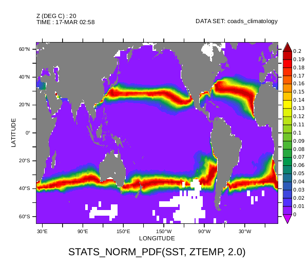
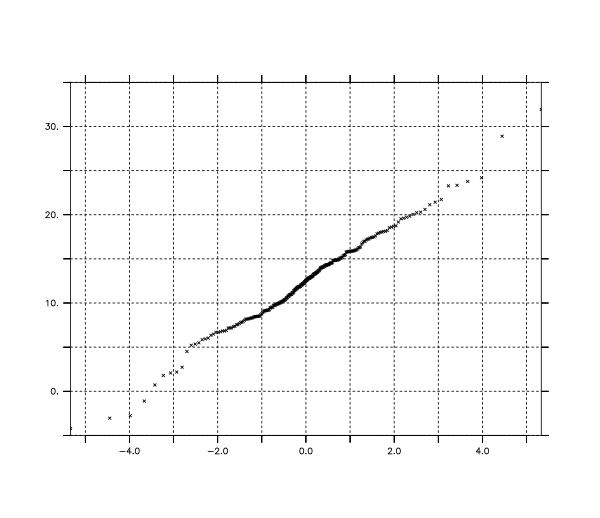

The following describes the new options to existing Ferret commands, additional Ferret commands, regridding functions, shapefile functions, and statistical functions found in PyFerret.
Additional options to existing Ferret commands
The following new options have been added to existing Ferret commands and are available in PyFerret only from the PyFerret "yes?" command line:
- SET WINDOW
-
- /QUALITY={high,draft}
- Specifies the quality of displayed images. A warning will be issued and this option will be ignored if the -nodisplay (or -unmapped or -gif) command-line option to pyferret was given. High-quality is required to generate PDF or PostScript images. Draft quality is required to correctly handle on-the-fly animation.
- /ANTIALIAS | /NOANTIALIAS
- Turns on or off anti-aliasing is subsequent drawing commands. Only one should be specified; if both are given, a warning will be issued and /NOANTIALIAS will be ignored.
- /COLOR=...
- Specifies the background color for the image. The color can be a pen number, a color name, a (
- /OPACITY=n
- Specifies the opacity for the background color. Overrides any opacity specified in /COLOR. Primarily used for specifying an opacity of a named color, or setting a transparent background.
- /THICKEN=f
- Universal line thickness scaling factor. This floating point value is particularly useful for modifying the default line thicknesses.
- /XINCHES=f /YINCHES=f
- Specifies the values for PPL$WIDTH and PPL$HEIGHT, the inch size of the "canvas" for the plot. The default values should by used by most users. While this is the default size when saving vector images (PDF, PS, SVG), one should normally use the /XINCHES or /YINCHES option to the FRAME command to scale the plot to the desired size for vector images.
- /XPIXELS=n /YPIXELS=n
- Specifies the size, in pixels, of the displayed plot. This is also the default size of raster images (PNG, JPEG) saved using the FRAME command. The displayed plot, including line thickness, is scaled to the specified size; use the /THICKEN option to scale line thickness as desired.
- /TEXTPROM=f
- Universal scaling factor for text size. This floating point value is particularly useful for modifying the default text sizes.
- /WMARK=... /WMXLOC=f /WMYLOC=f /WMOPACITY=f /WMSCALE=f
- This capability is in development and may change in future releases.
- Specifies the file containing the image of the watermark to overlay on top of the plot. /WMXLOC & /WMYLOC together specify the location of the image's upper right corner over the plot in terms of pixels. /WMOPACITY specifies the opacity of the image to overlay as a percentage independently of any other opacity values. /WMSCALE specifies the scale of the vertical and horizontal dimensions of the image as a ratio of the original image and preserves the original aspect ratio.
- Size options to FRAME
- The pixel size of saved raster images (PNG, JPEG) can be specified using either the /XPIXEL or /YPIXEL (but not both) option to the FRAME Ferret command. The inch size of saved vector images (PS, PDF, SVG) can be specified using either /XINCHES or /YINCHES (but not both) option to the FRAME Ferret command. When saving the plot, the image is scaled, maintaining the aspect ratio, so that the specified size is obtained.
- /COLOR option to CONTOUR, PLOT, POLYGON, VECTOR
- Colors can now be specified using a (
- /OPACITY option to CONTOUR (FILL), PLOT, POLYGON, SHADE, VECTOR
- Specifies the percent opacity (0 = transparent, 100 = opaque) of any colors used, overriding any color opacities given. Particularly useful for given setting an opacity for a named color or a color palette.
- Color palettes for FILL and SHADE
- Colors in color palette files can now include a percent opacity after the red, green, and blue percents. Colors without a percent opacity will be opaque (100
- /THICK option to CONTOUR, PLOT, VECTOR
- Line thickness can now be any floating point value, and gives the line thickness in points (1/72 inches). The scaling factor in SET WINDOW /THICKEN=f is applied to the specified value.
Ferret commands available from the PyFerret command line
The following commands have been added to Ferret when running PyFerret from the "yes?" command-line prompt:
- DEFINE PYFUNC [ /NAME=alias ] module.name
- Creates an external function using the Python module given by module.name. If /NAME is given, the name of the function will the the name given by alias; otherwise, the name of the functions will be the name of the module.
- EXIT /TOPYTHON
- Exits the Ferret command-line interface and returns to the Python interface. To return to the Ferret command-line interface, enter pyferret.run() at the Python prompt.
- CANCEL PYVAR [ pyvar_name | /ALL ]
- Deletes the Python variable given by pyvar_name, or all Python variables present if /ALL is given instead. Python variables are variables added to Ferret datasets using the pyferret.put or pyferret.putdata functions.
Additional regridding functions
These functions are currently under development and may not be available on all systems. They use the ESMP library and will not install if it is not present.
The following regridding functions have been added to Ferret when running PyFerret from the "yes?" command line. These regridding functions return data values on a standard Ferret grid that closely approximate the data values given on the curvilinear grid. These are Ferret external functions written in Python, and make use of the ESMP Python module that uses ESMF functionality for regridding. To learn about ESMP/ESMF search Earth System Modeling Framework.
- CURV2RECT(CurvData, CurvCenterLons, CurvCenterLats, CurvCornerLons, CurvCornerLats, TemplateRectVar, Method)
- Regrids curvilinear data to a standard Ferret grid. A brief list of the function arguments are given below, followed by more detailed descriptions of each argument.
- CurvData: curvilinear X,Y data positioned at centers
- CurvCenterLons: curvilinear center longitudes on an X,Y grid
- CurvCenterLats: curvilinear center latitudes on an X,Y grid
- CurvCornerLons: curvilinear corner longitudes on an X,Y (maybe Z) grid
- CurvCornerLats: curvilinear corner latitudes on an X,Y (maybe Z) grid
- TemplateRectVar: template variable on the desired rectilinear grid
- Method: regridding method; one of "BILINEAR", "PATCH", or "CONSERVE"
The data in CurvData is given on a curvilinear coordinate system where the longitude and latitude for each data point is specified by other arguments. Locations of undefined curvilinear data values will be ignored in the regridding process.
The longitudes and latitudes of the "center" points, where the data values are located, can be specified by the two-dimension arrays CurvCenterLons and CurvCenterLats. The data point CurvData(i,j,k,l,m,n) is located at longitude CurvCenterLons(i,j) and latitude CurvCenterLats(i,j).
Alternatively, or additionally, the corners of the curvilinear cell quadrilaterals can be specified by the two-dimensional or three-dimensional arrays CurvCornerLons and CurvCornerLats. If these corner arrays are two-dimensional, the number of points on their X and Y axes must be one more than that of CurvData. The data point CurvData(i,j,k,l,m,n) is positioned in the quadrilateral formed by CurvCornerLons longitudes and CurvCornerLats latitudes (i,j), (i+1,j), (i+1,j+1), and (i,j+1).
If these corner arrays are three-dimensional, the number of points on their X and Y axes must be the same as CurvData, and the Z axis must have four points. The data point CurvData(i,j,k,l,m,n) is positioned in the quadrilateral formed by CurvCornerLons longitudes and CurvCornerLats latitudes (i,j,1), (i,j,2), (i,j,3), and (i,j,4). These corner points must overlap such that corner point (i,j,3) is the same as (i+1,j+1,1). Also, corner points (i,j,2) must be the same as (i+1,j,1) and (i,j,4) must be the sam If you only want to specify center points, CurvCornerLons and CurvCornerLats should both be given as a single-point array {0.0}. If you only want to specify corner points, CurvCenterLons and CurvCenterLats should both be given as a single-point array {0.0}. If only corner points are given, the data will be positioned at the centroid (computed using unweighted coordinates) of each curvilinear quadrilateral.
TemplateRectVar is a variable specifying the grid, as well as the undefined points, for the desired variable returned by this function. The Z, T, E, and F axes of TemplateRectVar and CurvData must be the same. Data values at undefined data locations in TemplateRectVar will not be estimated in the regridding process and will be undefined in the returned variable.
The name of the method to use to perform the regridding is given by the Method argument. To perform conservative regridding, specified by the "CONSERVE" method name, corner points must be specified in CurvCornerLons and CurvCornerLats. - CURV3SRECT(CurvData, CurvLons, CurvLats, CurvBaths, CurvZetas, TemplateRectVar, Method)
- Regrids curvilinear longitude, latitude, and sigma depths to a standard Ferret grid; zeta specifies ocean swell at a given location and time. A brief list of the function arguments are given below, followed by more detailed descriptions of each argument.
- CurvData: curvilinear X,Y,Z,[T,E,F] data where Z is sigma values
- CurvLons: longitudes of curvilinear data on an X,Y grid
- CurvLats: latitudes of curvilinear data on an X,Y grid
- CurvBaths: bathymetry (as depths) of curvilinear data on an X,Y grid
- CurvZetas: water surface elevations of curvilinear data on an X,Y,[T] grid (optional)
- TemplateRectVar: template variable on the desired rectilinear X,Y,Z,[T,E,F] grid where Z is depths
- Method: regridding method; either "BILINEAR" or "PATCH"
The data in CurvData is given on a curvilinear coordinate system where the longitude, latitude, and depth for each data point is specified by other arguments. Locations of undefined curvilinear data values will be ignored in the regridding process.
The longitudes and latitudes of the "center" points, where the data values are located, are specified by the two-dimension arrays CurvLons and CurvLats. The data point CurvData(i,j,k,l,m,n) is located at longitude CurvCenterLons(i,j) and latitude CurvCenterLats(i,j); thus do not change with depth or time.
The sigma Z axis of CurvData is unitless and ranges from zero to one, specifying the depth of the data point as a fraction of the total ocean depth at that location and time. Thus, the depth of CurvData(i,j,k,l,m,n) is given by Z(k) * (CurvBaths(i,j) + CurvZetas(i,j,,l)) - CurvZetas(i,j,,l). Units of CurvBaths and CurvZetas should be meters, and CurvZetas must have the same time (T) axis as CurvData. If you do not want to include a zeta value, CurvZeta should both be given as a single-point array {0.0}.
The name of the method to use to perform the regridding is given by the Method argument. Note that the patch method is computationally much more intensive. Also, the bilinear method can be sensitive to irregularities or rapidly changing values, such as those that may occur near deep ocean islands.
Shapefile functions
The following functions supporting shapefiles have been added to Ferret, when running PyFerret from the "yes? command line. These are Ferret external functions written in Python, and make use of the PyShp Python module available from https://code.google.com/archive/p/pyshp//
There is more discussion and a short example in the FAQ, Using Shapefiles in PyFerret
- SHAPEFILE_READXY(SHAPEFILE, MAXPTS)
- Returns X, Y coordinates of shapes from shapefile. Missing value separates shapes.
- SHAPEFILE_READXYVAL(SHAPEFILE ,VALNAME, MAXPTS)
- Returns X, Y, and a value from shapes in a shapefile. Missing value separates shapes.
- SHAPEFILE_READXYZ(SHAPEFILE, MAXPTS)
- Returns X, Y, Z coordinates of shapes from shapefile. Missing value separates shapes.
- SHAPEFILE_READXYZVAL(SHAPEFILE, VALNAME, MAXPTS)
- Returns X, Y, Z, and a value from shapes in a shapefile. Missing value separates shapes.
- SHAPEFILE_WRITEVAL(SHAPEFILE, VALUE, VALNAME, MAPPRJ)
- Writes a shapefile of XY quadrilaterals associated with given values.
- SHAPEFILE_WRITEXYVAL(SHAPEFILE, GRIDX, GRIDY, VALUE, VALNAME, MAPPRJ)
- Writes a shapefile of XY quadrilaterals and an associated value from the curvilinear data arrays.
- SHAPEFILE_WRITEXYZVAL(SHAPEFILE, GRIDX, GRIDY, GRIDZ, VALUE, VALNAME, MAPPRJ)
- Writes a shapefile of XY quadrilaterals with Z coordinates and an associated value from the curvilinear data arrays.
Additional statistical functions
The following statistical functions have been added to Ferret, when running PyFerret from the "yes? command line. These are Ferret external functions written in Python, and make use of stats module in SciPy (see: https://scipy.org/). Listed first are a number of statistical tests and fitting functions. This is followed by statistical functions returning the cumulative distribution function (CDF) values, inverse survival function (ISF) values, probability density function (P
Statistical tests and fitting
In the following statistical functions, the probability distribution name argument PDNAME and parameter argument PDPARAMS match those described for the generic distribution functions.
- STATS_CHISQUARE(SAMPLE_CNTS, EXPECT_CNTS, DELTA_DEGFREE)
- Returns the chi-square test statistic and probability that the given sample counts of the category data matches the given population expected counts. The number of good categories is also returned.
SAMPLE_CNTS: Sample counts of categorical data
EXPECT_CNTS: Expected counts or relative frequencies (will be adjusted)
DELTA_DEGFREE: Difference from standard (N-1) degrees of freedom (the number of computed parameters) - STATS_FIT(VALS, PDNAME, PDPARAMS)
- Returns parameters for a probability distribution that best fit all defined data values.
Note: use with caution; as of this writing, the underlying scipy.stats function does not raise an error when it fails, but rather returns parameters with either a value of one or the input value.
VALS: Values to fit with the probability distribution
PDNAME: Name of the probability distribution type to use
PDPARAMS: Initial parameter estimates for this probability distribution - STATS_KSTEST1(SAMPLE, PDNAME, PDPARAMS)
- Returns two-sided Kolmogorov-Smirnov test statistic and probability that sample comes from a population with indicated probability distribution.
SAMPLE: Sample data array
PDNAME: Name of a continuous probability distribution
PDPARAMS: Parameters for this continuous probability distribution - STATS_KSTEST2(SAMPLEA, SAMPLEB)
- Returns two-sided Kolmogorov-Smirnov test statistic and probability that two samples comes from the same probability distribution.
SAMPLEA: First sample data array
SAMPLEB: Second sample data array - STATS_LINREGRESS(XVALS, YVALS)
- Returns the slope, intercept, and correlation coefficient (r) for a linear regression. The number of good points used in the linear regression is also returned.
XVALS: Abscissa values for the linear regression fit
YVALS: Ordinate values for the linear regression fit - STATS_PEARSONR(SAMPLEA, SAMPLEB)
- Returns Pearson correlation coefficient between two samples of data. The number of good points used in the calculation is also returned.
SAMPLEA: First array of sample data
SAMPLEB: Second array of sample data - STATS_PERCENTILESOFSCORES(SAMPLE, SCORES)
- Returns interpolated percentiles (0-100) through a sample for given scores (values)
SAMPLE: Sample of scores (values)
SCORES: Scores (values) to find percentiles through sample - STATS_PROBPLOTVALS(SAMPLE, PDNAME, PDPARAMS)
- Returns the order statistic medians in the j=1 column, the ordered response data in the j=2 column for the given sample compared to the indicated distribution. The slope, intercept, and correlation coefficient of regression line best fitting these columns of data is return in the j=3 column. The slope and intercept values often are used as spread and location parameter estimates (or corrections) of the indicated distribution. A demonstration of this is given the
Generic statistical functions
These "generic" distribution functions expect the name of the probability distribution to use as the argument PDNAME, and a list of parameters appropriate for that distribution as the argument PDPARAMS. For a description of the parameters expected for each probability distribution, see the description of distribution-specific functions: Beta, Binomial, Cauchy, Chi, Chi-square, Exponential, Exponentiated-Weibull, Fisher, Gamma, Shifted-geometric, Hypergeometric, Inverse-gamma, Laplace, Log-normal, Negative-binomial, Normal, Pareto, Poisson, Students-T, Discrete-uniform, Uniform, and Weibull distributions. For the distribution-specific functions, each of the distribution paramaters are separate function arguments and, as such, may be arrays of values. Finally, an example Ferret session using some of these functions are given in the example session below.
- STATS_HELPER(PDNAME)
- Help on probability distribution names or parameters
PDNAME: Name of a probability distribution to list the parameters of, or blank to list all distribution names
yes? list stats_helper("normal") VARIABLE : STATS_HELPER("normal") SUBSET : 24 points (X) 1 / 1:"Parameters of probability distribution normal" 2 / 2:"(1) MU: mean value" 3 / 3:"(2) SIGMA: standard deviation" 4 / 4:"" 5 / 5:"" ...- STATS_CDF(PTS, PDNAME, PDPARAMS)
- Returns cumulative distribution function values for a probability distribution
PTS: Points at which to calculate the cumulative distribution function values - STATS_ISF(PROBS, PDNAME, PDPARAMS)
- Returns inverse survival function values for a probability distribution
PROBS: Probabilities (values from zero to one) at which to calculate the inverse survival function values - STATS_PDF(PTS, PDNAME, PDPARAMS)
- Returns probability density function values for a continuous probability distribution
PTS: Points at which to calculate the probability density function values - STATS_PMF(PTS, PDNAME, PDPARAMS)
- Returns probability mass function values for a discrete probability distribution
PTS: Points at which to calculate the probability mass function values - STATS_PPF(PROBS, PDNAME, PDPARAMS)
- Returns percent point function (inverse of CDF) values for a probability distribution
PROBS: Probabilities (0-1) at which to calculate the percent point function values - STATS_SF(PTS, PDNAME, PDPARAMS)
- Returns survival function (1.0 - CDF) values for a probability distribution
PTS: Points at which to calculate the survival function values - STATS_RVS(TEMPLATE, PDNAME, PDPARAMS)
- Returns random variates for a probability distribution
TEMPLATE: Template array for the array of random variates to be returned
Beta distribution functions
- STATS_BETA_CDF(PTS, ALPHA, BETA)
STATS_BETA_ISF(PTS, ALPHA, BETA)
STATS_BETA_PDF(PTS, ALPHA, BETA)
STATS_BETA_PPF(PTS, ALPHA, BETA)
STATS_BETA_SF(PTS, ALPHA, BETA)
STATS_BETA_RVS(PTS, ALPHA, BETA) - ALPHA: First shape parameter(s)
BETA: Second shape parameter(s)
Binomial distribution functions
- STATS_BINOM_CDF(PTS, N, P)
STATS_BINOM_ISF(PTS, N, P)
STATS_BINOM_PMF(PTS, N, P)
STATS_BINOM_PPF(PTS, N, P)
STATS_BINOM_SF(PTS, N, P)
STATS_BINOM_RVS(PTS, N, P) - N: Parameter(s) defining the number of trials
P: Parameter(s) defining the success probability in each trial
Cauchy distribution functions
- STATS_CAUCHY_CDF(PTS, M, GAMMA)
STATS_CAUCHY_ISF(PTS, M, GAMMA)
STATS_CAUCHY_PDF(PTS, M, GAMMA)
STATS_CAUCHY_PPF(PTS, M, GAMMA)
STATS_CAUCHY_SF(PTS, M, GAMMA)
STATS_CAUCHY_RVS(PTS, M, GAMMA) - M: Parameter(s) defining the location (median)
GAMMA: Parameter(s) defining the scale (half-width at half-maximum)
Chi distribution functions
- STATS_CHI_CDF(PTS, DF)
STATS_CHI_ISF(PTS, DF)
STATS_CHI_PDF(PTS, DF)
STATS_CHI_PPF(PTS, DF)
STATS_CHI_SF(PTS, DF)
STATS_CHI_RVS(PTS, DF) - DF: Parameter(s) defining the degrees of freedom
Chi-square distribution functions
- STATS_CHI2_CDF(PTS, DF)
STATS_CHI2_ISF(PTS, DF)
STATS_CHI2_PDF(PTS, DF)
STATS_CHI2_PPF(PTS, DF)
STATS_CHI2_SF(PTS, DF)
STATS_CHI2_RVS(PTS, DF) - DF: Parameter(s) defining the degrees of freedom
Exponential distribution functions
- STATS_EXPON_CDF(PTS, LAMBDA)
STATS_EXPON_ISF(PTS, LAMBDA)
STATS_EXPON_PDF(PTS, LAMBDA)
STATS_EXPON_PPF(PTS, LAMBDA)
STATS_EXPON_SF(PTS, LAMBDA)
STATS_EXPON_RVS(PTS, LAMBDA) - LAMBDA: Parameter(s) defining the rate (inverse scale)
Exponentiated-Weibull distribution functions
- STATS_EXPONWEIB_CDF(PTS, K, LAMBDA, ALPHA)
STATS_EXPONWEIB_ISF(PTS, K, LAMBDA, ALPHA)
STATS_EXPONWEIB_PDF(PTS, K, LAMBDA, ALPHA)
STATS_EXPONWEIB_PPF(PTS, K, LAMBDA, ALPHA)
STATS_EXPONWEIB_SF(PTS, K, LAMBDA, ALPHA)
STATS_EXPONWEIB_RVS(PTS, K, LAMBDA, ALPHA) - K: Parameter(s) defining the Weibull shape
LAMBDA: Parameter(s) defining the scale
ALPHA: Parameter(s) defining the power shape
Fisher (F) distribution functions
- STATS_F_CDF(PTS, DFN, DFD)
STATS_F_ISF(PTS, DFN, DFD)
STATS_F_PDF(PTS, DFN, DFD)
STATS_F_PPF(PTS, DFN, DFD)
STATS_F_SF(PTS, DFN, DFD)
STATS_F_RVS(PTS, DFN, DFD) - DFN: Parameter(s) defining the numerator degrees of freedom
DFD: Parameter(s) defining the denominator degrees of freedom
Gamma distribution functions
- STATS_GAMMA_CDF(PTS, ALPHA, THETA)
STATS_GAMMA_ISF(PTS, ALPHA, THETA)
STATS_GAMMA_PDF(PTS, ALPHA, THETA)
STATS_GAMMA_PPF(PTS, ALPHA, THETA)
STATS_GAMMA_SF(PTS, ALPHA, THETA)
STATS_GAMMA_RVS(PTS, ALPHA, THETA) - ALPHA: Parameter(s) defining the shape
THETA: Parameter(s) defining the scale
(Shifted-)geometric distribution functions
- STATS_GEOM_CDF(PTS, P)
STATS_GEOM_ISF(PTS, P)
STATS_GEOM_PMF(PTS ,P)
STATS_GEOM_PPF(PTS, P)
STATS_GEOM_SF(PTS, P)
STATS_GEOM_RVS(PTS, P) - P: Parameter(s) defining the success probability
Hypergeometric distribution functions
- STATS_HYPERGEOM_CDF(PTS, NTOTAL, NGOOD, NDRAWN)
STATS_HYPERGEOM_ISF(PTS, NTOTAL, NGOOD, NDRAWN)
STATS_HYPERGEOM_PMF(PTS, NTOTAL, NGOOD, NDRAWN)
STATS_HYPERGEOM_PPF(PTS, NTOTAL, NGOOD, NDRAWN)
STATS_HYPERGEOM_SF(PTS, NTOTAL, NGOOD, NDRAWN)
STATS_HYPERGEOM_RVS(PTS, NTOTAL, NGOOD, NDRAWN) - NTOTAL: Parameter(s) defining the total number of items
NGOOD: Parameter(s) defining the total number of 'success' items
NDRAWN: Parameter(s) defining the number of items selected
Inverse-gamma distribution functions
- STATS_INVGAMMA_CDF(PTS, ALPHA ,BETA)
STATS_INVGAMMA_ISF(PTS, ALPHA, BETA)
STATS_INVGAMMA_PDF(PTS, ALPHA, BETA)
STATS_INVGAMMA_PPF(PTS, ALPHA, BETA)
STATS_INVGAMMA_SF(PTS, ALPHA, BETA)
STATS_INVGAMMA_RVS(PTS, ALPHA, BETA) - ALPHA: Parameter(s) defining the shape
BETA: Parameter(s) defining the scale
Laplace distribution functions
- STATS_LAPLACE_CDF(PTS, MU, B)
STATS_LAPLACE_ISF(PTS, MU, B)
STATS_LAPLACE_PDF(PTS, MU, B)
STATS_LAPLACE_PPF(PTS, MU, B)
STATS_LAPLACE_SF(PTS, MU, B)
STATS_LAPLACE_RVS(PTS, MU, B) - MU: Parameter(s) defining the location (mean)
B: Parameter(s) defining the scale
Log-normal distribution functions
- STATS_LOGNORM_CDF(PTS, MU, SIGMA)
STATS_LOGNORM_ISF(PTS, MU, SIGMA)
STATS_LOGNORM_PDF(PTS, MU, SIGMA)
STATS_LOGNORM_PPF(PTS, MU, SIGMA)
STATS_LOGNORM_SF(PTS, MU, SIGMA)
STATS_LOGNORM_RVS(PTS, MU, SIGMA) - MU: Parameter(s) defining the log-scale (mean of the natural log of the distribution)
SIGMA: Parameter(s) defining the shape (std. dev. of the natural log of the distribution)
Negative-binomial distribution functions
- STATS_NBINOM_CDF(PTS, N, P)
STATS_NBINOM_ISF(PTS, N, P)
STATS_NBINOM_PMF(PTS, N, P)
STATS_NBINOM_PPF(PTS, N, P)
STATS_NBINOM_SF(PTS, N, P)
STATS_NBINOM_RVS(PTS, N, P) - N: Parameter(s) defining the number of successes to stop
P: Parameter(s) defining the success probability in each trial
Normal distribution functions
- STATS_NORM_CDF(PTS, MU, SIGMA)
STATS_NORM_ISF(PTS, MU, SIGMA)
STATS_NORM_PDF(PTS, MU, SIGMA)
STATS_NORM_PPF(PTS, MU, SIGMA)
STATS_NORM_SF(PTS, MU, SIGMA)
STATS_NORM_RVS(PTS, MU, SIGMA) - MU: Parameter(s) defining the mean value
SIGMA: Parameter(s) defining the standard deviation
Pareto distribution functions
- STATS_PARETO_CDF(PTS, XM, ALPHA)
STATS_PARETO_ISF(PTS, XM, ALPHA)
STATS_PARETO_PDF(PTS, XM, ALPHA)
STATS_PARETO_PPF(PTS, XM, ALPHA)
STATS_PARETO_SF(PTS, XM, ALPHA)
STATS_PARETO_RVS(PTS, XM, ALPHA) - XM: Parameter(s) defining the scale (minimum abscissa value)
ALPHA: Parameter(s) defining the shape
Poisson distribution functions
- STATS_POISSON_CDF(PTS, MU)
STATS_POISSON_ISF(PTS, MU)
STATS_POISSON_PMF(PTS, MU)
STATS_POISSON_PPF(PTS, MU)
STATS_POISSON_SF(PTS, MU)
STATS_POISSON_RVS(PTS, MU) - MU: Parameter(s) defining the expected number of occurrences
Students-T distribution functions
- STATS_T_CDF(PTS, DF)
STATS_T_ISF(PTS, DF)
STATS_T_PDF(PTS, DF)
STATS_T_PPF(PTS, DF)
STATS_T_SF(PTS, DF)
STATS_T_RVS(PTS, DF) - DF: Parameter(s) defining the degrees of freedom
Discrete-uniform (random integer) distribution functions
- STATS_RANDINT_CDF(PTS, MIN, MAX)
STATS_RANDINT_ISF(PTS, MIN, MAX)
STATS_RANDINT_PMF(PTS, MIN, MAX)
STATS_RANDINT_PPF(PTS, MIN, MAX)
STATS_RANDINT_SF(PTS, MIN, MAX)
STATS_RANDINT_RVS(PTS, MIN, MAX) - MIN: Parameter(s) defining the minimum integer
MAX: Parameter(s) defining the maximum integer (included)
Uniform distribution functions
- STATS_UNIFORM_CDF(PTS, MIN, MAX)
STATS_UNIFORM_ISF(PTS, MIN, MAX)
STATS_UNIFORM_PDF(PTS, MIN, MAX)
STATS_UNIFORM_PPF(PTS, MIN, MAX)
STATS_UNIFORM_SF(PTS, MIN, MAX)
STATS_UNIFORM_RVS(PTS, MIN, MAX) - MIN: Parameter(s) defining the minimum
MAX: Parameter(s) defining the maximum
Weibull distribution functions
- STATS_WEIBULL_CDF(PTS, K, LAMBDA)
STATS_WEIBULL_ISF(PTS, K, LAMBDA)
STATS_WEIBULL_PDF(PTS, K, LAMBDA)
STATS_WEIBULL_PPF(PTS, K, LAMBDA)
STATS_WEIBULL_SF(PTS, K, LAMBDA)
STATS_WEIBULL_RVS(PTS, K, LAMBDA) - K: Parameter(s) defining the shape
LAMBDA: Parameter(s) defining the scale
Ferret session using some of the statistics functions
Here is an example Ferret session in PyFerret using the STATS_NORM_PDF function with an array of values for one of the parameter arguments.
use coads_climatology ! Create a Z axis defining temperatures (instead of level) def axis /Z=0.0:35.0:5.0 /unit="Deg C" ztempaxis *** NOTE: (fyi) units are not subject to auto-conversion: DEG C let ztemp = Z[gz=ztempaxis] ! Generate probabilities that SST comes from normal distributions ! centered at the ztempaxis values with a standard deviation of 2.0 ! Since SST does not have a Z axis, the Z-array of values can be ! given for the mu parameter and the result will use that Z axis. let sstpdfs = stats_norm_pdf(sst, ztemp, 2.0) ! The result's X, Y, and T axes are inherited from SST; ! the Z axis is inherited from ztemp show grid sstpdfs GRID (G003) name axis # pts start end COADSX LONGITUDE 180mr 21E 19E(379) COADSY LATITUDE 90 r 89S 89N ZTEMPAXIS Z (DEG C) 8 r 0 35 TIME TIME 12mr 16-JAN 06:00 16-DEC 01:20 ! Generate a plot, using the system's arial font for text, ! of some of the data and save it as a small PNG set text /font=arial fill /lev=(-inf)(0.0,0.2,0.01)(inf) sstpdfs[Y=65S:65N,Z=20,T=17-MAR] go fland frame /file=sst20deg.png /xpixels=600
The image produced show the bands of the ocean where the sea surface temperature is near 20°C mid-March in the climatological year.
Continuing the above Ferret session, we now uses some of the random variate functions and demonstrate the use of the STATS_PROBPLOTVALS function.
! create a template area with some regions of undefined values let template = sst[X=155W:115W,Y=25N:55N,T=15-MAR] stats template SST[X=155W:115W,Y=25N:55N,T=15-MAR] LONGITUDE: 156W to 114W LATITUDE: 24N to 56N Z: N/A TIME: 17-MAR 02:58 E: N/A F: N/A DATA SET: .../data/coads_climatology.cdf Total # of data points: 336 (21*16*1*1*1*1) # flagged as bad data: 49 Minimum value: 3.7339 Maximum value: 22.528 Mean value: 12.497 (unweighted average) Standard deviation: 5.1224 ! Create some test values by selecting random values from a Laplace ! distribution centered at 12.5 with a width parameter of 3.0. ! Then add some "noise" by adding random values from a normal ! distribution centered at 0.0 with a standard deviation of 1.0 let testvals = stats_laplace_rvs(template, 12.5, 3.0) + stats_norm_rvs(template, 0.0, 1.0) ! Note that the axes and undefined regions are inherited from the template stats testvals STATS_LAPLACE_RVS(TEMPLATE, 12.5, 3.0) + STATS_NORM_RVS(TEMPLATE, 0.0, 1.0) LONGITUDE: 156W to 114W LATITUDE: 24N to 56N Z: N/A TIME: 17-MAR 02:58 E: N/A F: N/A DATA SET: .../data/coads_climatology.cdf Total # of data points: 336 (21*16*1*1*1*1) # flagged as bad data: 49 Minimum value: -4.2095 Maximum value: 31.93 Mean value: 12.436 (unweighted average) Standard deviation: 4.5833 ! Use the stats_probplotvals function to obtain data for visually ! comparing the test data to that expected from a Laplace distribution let ppvals = stats_probplotvals(testvals, "laplace", {0.0,1.0}) ! Plot the data points for visually examining the distribution fit plot /vs /graticule=dash /nolabel ppvals[j=1], ppvals[j=2] ! Save the plot as a PNG file frame /file=probplot.png /xpixels=600 ! List the slope, intercept, and correlation coefficient of the fitted line list ppvals[i=1:3,j=3] VARIABLE : STATS_PROBPLOTVALS(TESTVALS, "laplace", {0.0,1.0}) FILENAME : coads_climatology.cdf FILEPATH : /home/flat/ksmith/Datasets/data/ SUBSET : 3 points (X (VALUE_NUM)) Y (OSM,ORD,P): 3 3 3 1 / 1: 3.29 2 / 2: 12.44 3 / 3: 1.00The fairly straight line in the resulting plot shows a fairly good fit of the data to the probability distribution. The slope and intercept of the fitted line are close to the width and position parameters of the Laplace distribution used when creating the data.
